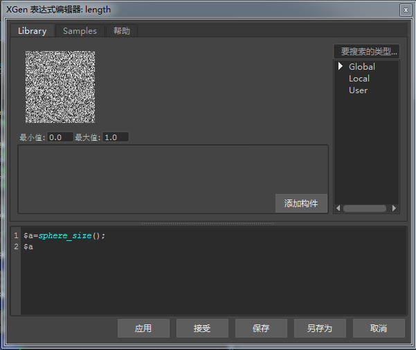

使用表达式均匀缩放球体
在本简短教程中，您将学习如何使用表达式均匀地随机缩放球体基本体的大小。
- 首先，创建一个用来指定 XGen 描述的多边形平面。将该平面在 X、Y 和 Z 方向上缩放到 10。将平面的以下两方面的细分数增加到 10：宽度和高度。
- 选择多边形平面后，转到“生成 > 创建描述...”(Generate > Create Description...)。
- 将显示“创建 XGen 描述”(Create XGen Description)对话框，询问“此描述将生成什么类型的基本体？”(What kind of Primitives are made by this Description?)选择“球体”(Spheres)，然后在“生成基本体”(Generate the Primitives)下选择“随机横跨曲面”(Randomly across the surface)。
- 将“密度”(Density)增加至 100 左右。您应该会看到平面上布满了球体，如下图所示。
如果您为“长度”(Length)、“宽度”(Width)和“深度”(Depth)属性添加了如下的典型随机表达式，会发现球体将在各个方向上不均匀地随机缩放：
$a=rand(0.1,1); $a 球体各自在长度、宽度和深度上随机缩放
一种能够在所有方向上均匀缩放球体的方法是在“表达式”(Expressions)选项卡下创建一个属性，供我们在“基本体属性”(Primitive Attributes)中进行调用。
- 转到“表达式”(Expressions)选项卡，并在“名称”(Name)属性中输入 sphere_size。确保将它设置为“浮点”(float)，然后单击 图标以创建属性。
您应该会看到新的浮点属性 sphere_size 已在下面创建完毕。
- 在文本字段中输入以下表达式：
rand(0.1,1) 这些值将确定球体大小的全局范围。
- 现在，将“长度”(Length )、“宽度”(Width)和“深度”(Depth)属性中之前的表达式替换为以下内容：
$a=sphere_size(); $a 
这时，您应该会看到球体在所有方向上随机均匀缩放：
有关如何使用表达式均匀缩放球体的简短教程到此结束。如果您想像示例图像中那样随机更改球体颜色，请阅读此教程 - 为基本体指定随机颜色。要了解如何为球体指定颜色纹理贴图，请阅读此教程 - 为基本体归档指定颜色。
| --- | --- |
 |
 |
更多示例
感谢 Pedro Fernando Gómez 在 XGen 方面提供的帮助。